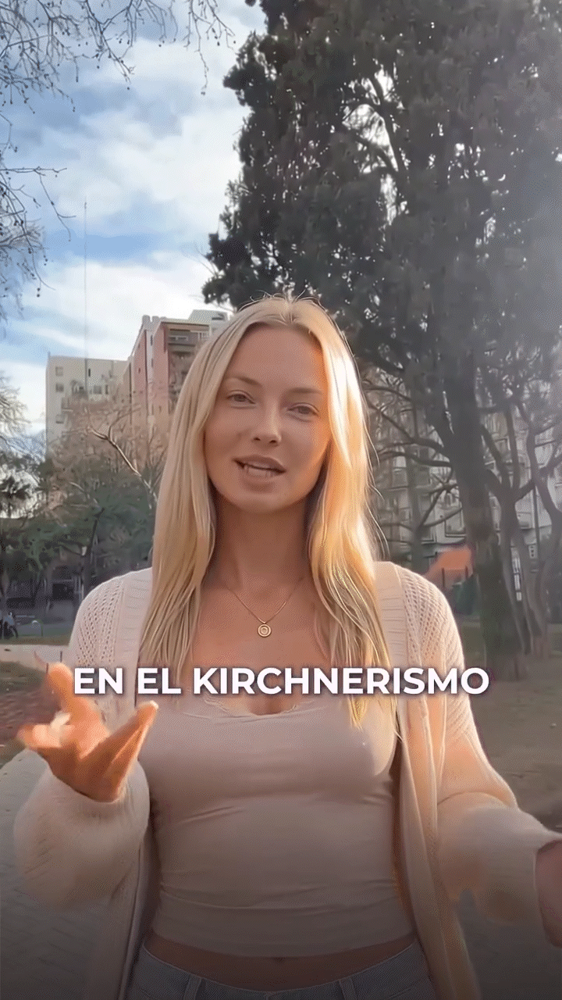

Análisis realizado a partir de una encuesta propia sobre la manera en que las audiencias jóvenes en Argentina perciben, consumen y construyen confianza en torno a figuras políticas e influencers creados mediante inteligencia artificial en redes sociales.
El objetivo de la investigación es analizar el rol de la autenticidad y la estética en la construcción de confianza e influencia, y explorar en qué medida el conocimiento de que una figura fue creada mediante inteligencia artificial modifica la credibilidad y la relación de las audiencias con su contenido. A su vez, buscamos indagar sus posibles desarrollos futuros dentro de la comunicación política digital.

Este dashboard analiza el caso de las influencers políticas creadas con inteligencia artificial vinculadas a La Libertad Avanza. A partir de una encuesta propia y fuentes secundarias, exploramos cómo los jóvenes argentinos perciben la autenticidad, la confianza y los riesgos de estos avatares digitales en la comunicación política.